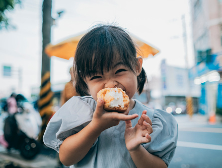
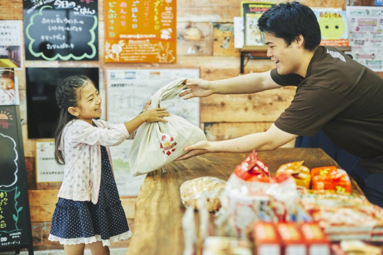

No Waste.
No Hunger.
Our Value
Can you believe that bread – that most useful of staples – is the food we throw away most often?
A whopping 24 million slices get thrown in the bin every day in the Canada – and that's just from our homes.
The good news is we're getting better: that figure is more than a third less than we were throwing away in 2007 – but it's still a massive waste!
Climate change, food waste and hunger are challenging issues, and it takes drive and the passion to face them head on.
Realizing our vision of No Waste. No Hunger. can only be done when we all believe that it can – and will – be achieved.
What We Do
We’re reducing our country’s environmental footprint by keeping surplus food out of landfills and reducing harmful greenhouse gases, a leading source of human-caused climate change.
We’re creating an efficient food supply chain by optimizing the resources that go into producing and distributing food, like energy, water and land.
We’re feeding people experiencing hunger in communities across Canada.
 